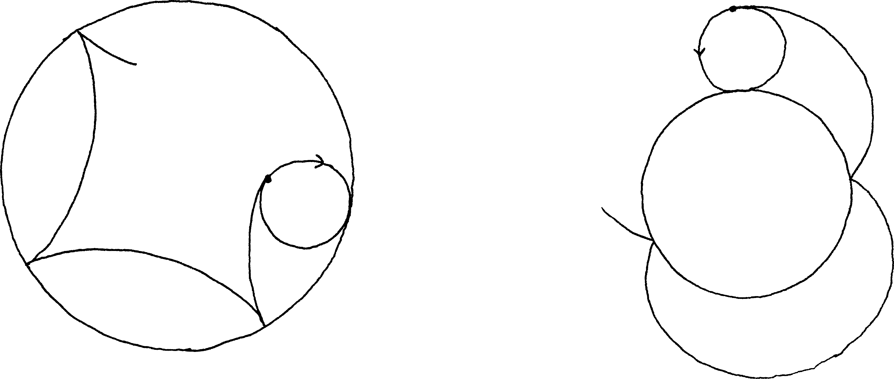
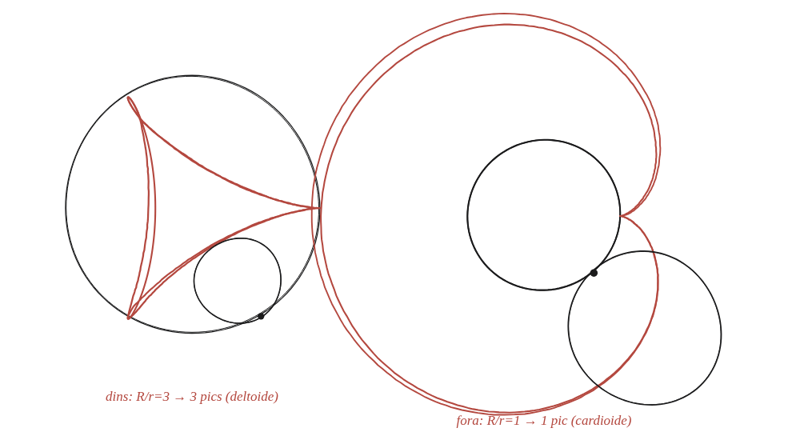

Com depèn el nombre de cúspides d'una hipocicloide dels radis de les dues circumferències? I en el cas d'una epicicloide?

Què hem de produir
Una fórmula, a partir dels dos radis —el cercle gran R i el petit r—, que digui quants pics (cúspides) té la corba que dibuixa un punt del cercle petit quan aquest rodola per dins (hipocicloide) o per fora (epicicloide) del cercle gran.
Un pic és un moment en què el punt "s'atura"
Un pic passa exactament quan el punt marcat toca el cercle gran: en aquell instant, el punt de contacte és el centre instantani de gir, així que no es mou —i el punt marcat, que hi és a sobre en aquell moment, tampoc. Quantes vegades toca el punt marcat el cercle gran en una volta completa del cercle petit al voltant seu?
La construcció

Tancar-ho
El nombre de pics és R/r, quan aquesta raó és un nombre enter: per cada volta completa del cercle gran, el cercle petit hi ha "rodat" R/r vegades, i cada rodolada completa produeix exactament un pic. Val el mateix argument tant si el cercle petit rodola per dins com per fora.
Tant per a la hipocicloide (rodolant per dins) com per a l'epicicloide (rodolant per fora), el nombre de pics és R/r, quan aquesta raó és un enter: cada volta sencera del cercle petit produeix exactament un instant d'immobilitat i, per tant, un pic.
Comprovació
R/r=3 (dins): deltoide, 3 pics —el cas de la figura del llibre. R/r=4 (dins): astroide, 4 pics —la mateixa corba que ja apareixia com a envolupant d'un bastó lliscant entre dos eixos. R/r=1 (fora): cardioide, 1 pic.
Que l'astroide (R/r=4, hipocicloide) sigui exactament la mateixa corba que l'envolupant del bastó lliscant no és casualitat: en tots dos casos, cada punt de la corba és un instant en què "alguna cosa" —el punt de contacte, o el bastó sencer— es queda momentàniament immòbil.